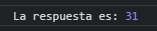
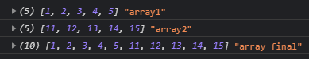
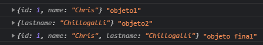

Rest - Spread
1.- Parámetro Rest, tres puntos (...)
Permite agregar valores no definidos
Usando:
function sum(valor1, valor2, ...valorNuevo) {
let result = valor1 + valor2;
valorNuevo.forEach(function (n) {
result += n;
})
return result;
}
let resultadoTotal = sum(8, 4, 9, 10);
console.log('La respuesta es:', resultadoTotal);

2.- Operador Spread con arrays, tres puntos (...)
Al agregar los puntos (...), une los dos arreglos y les da posición a cada valor
Usando:
const Array1 = [1, 2, 3, 4, 5];
const Array2 = [11, 12, 13, 14, 15];
const Array3 = [...Array1, ...Array2]
console.log(Array1, 'array1');
console.log(Array2, 'array2');
console.log(Array3, 'array final');

3.- Operador Spread con objects, tres puntos (...)
Usando:
const Object1 = { id: 1, name: 'Chris' };
const Object2 = { lastname: 'Chillogalli' };
const Object3 = { ...Object1, ...Object2 };
console.log(Object1, 'objeto1');
console.log(Object2, 'objeto2');
console.log(Object3, 'objeto final');
